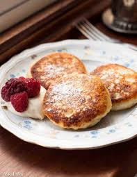

One of my jpbbies that I like to do is cook. I am very good and open to cooking with my mom or dad. My favorite dish to make is called Syrniki They are mostly filled with cheese. Syrniki are usually served with jam and they are consumed for breakfast. You can also put suagr icing on it.
These are the following ingredients you'll need
- 450g or 1lb farmer's cheese
- 2 eggs
- 2 tbsp oil
- 4 tbsp sugar
- 3/4 cup of flour
- 1/2 tsp baking powder
- 1 tsp vanilla
Instructions
- Combine cheese, eggs, sugar, oil, flour, baking powder and vanilla in a medium size bowl and mix all the ingredients with a hand mixer until you get a homogenous mass- no longer than 2-3 minutes. The mixture will be very sticky.
- Put the non-stick or cast iron frying pan on the stove on medium heat and add 3 tbsp of oil to it.
- Dust a clean work surface with some flour. Take a regular soup spoon and start scooping the mixture from the bowl. Put it directly on the floured surface and roll it in the flour, then flatten it with your palm to make it into a patty. Continue the process with the rest of your cheese mixture until it’s all gone. You should get about 14 patties.
- Before you start frying your syrniki make sure the oil in the frying pan is very hot by sprinkling a bit of flour into it. If it sizzles it’s hot enough. Fry the syrniki the same way you would pancakes. When you turn them over they should puff up a bit. The flour coating will make the outside slightly crispy while the mostly cheese filling will taste light and delicious.
- Dust syrniki with icing sugar as the final touch and serve them with your favourite jam or a fruit sauce. If you want a truly Russian experience enjoy them with a bit of “smetana”-creme fraiche.